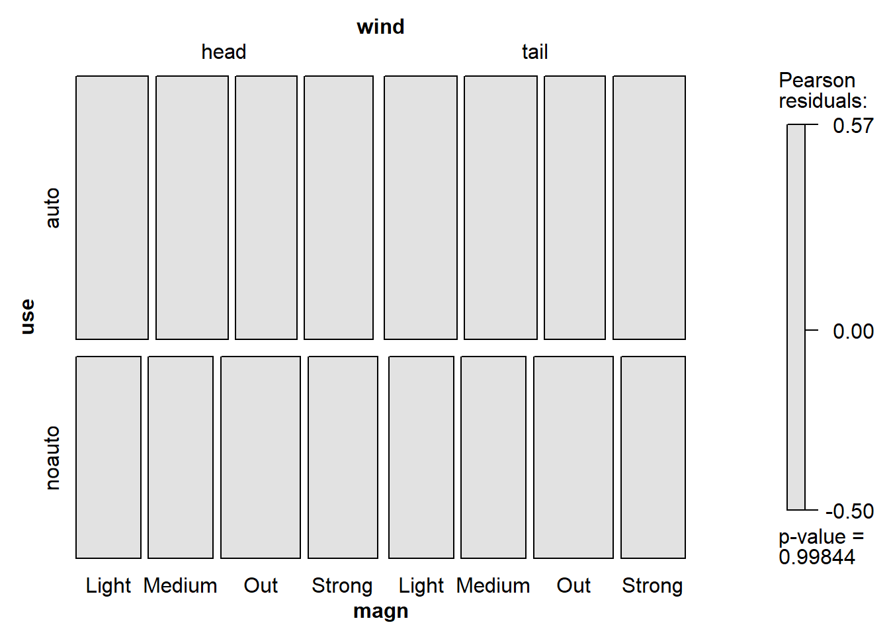
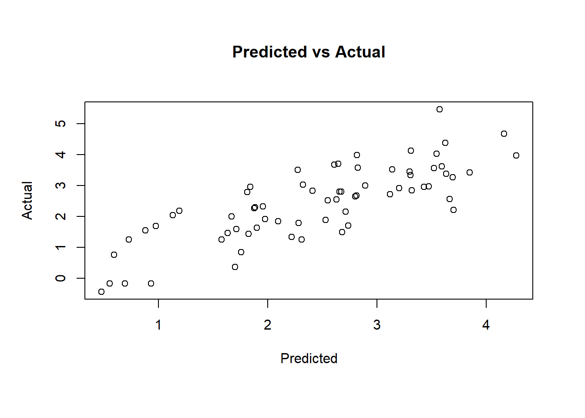
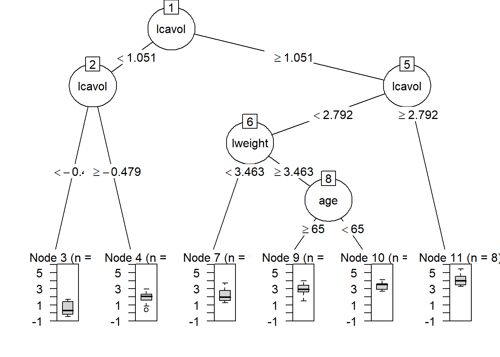
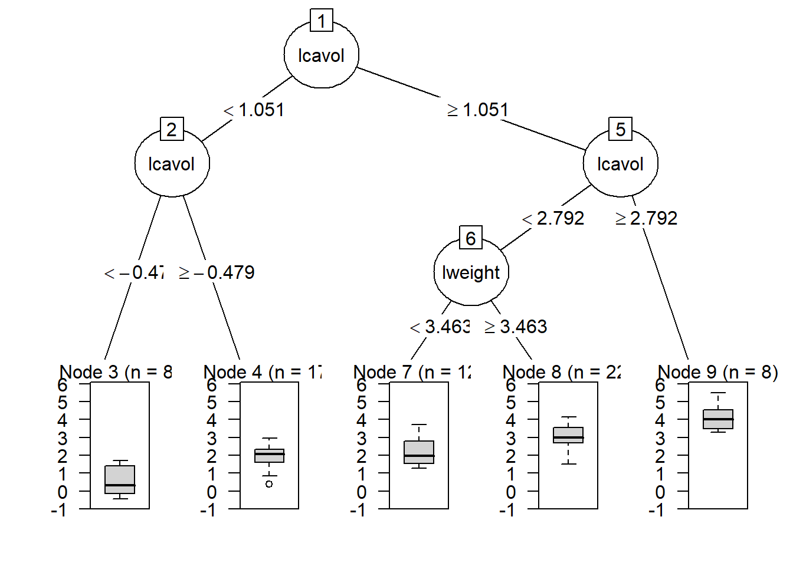
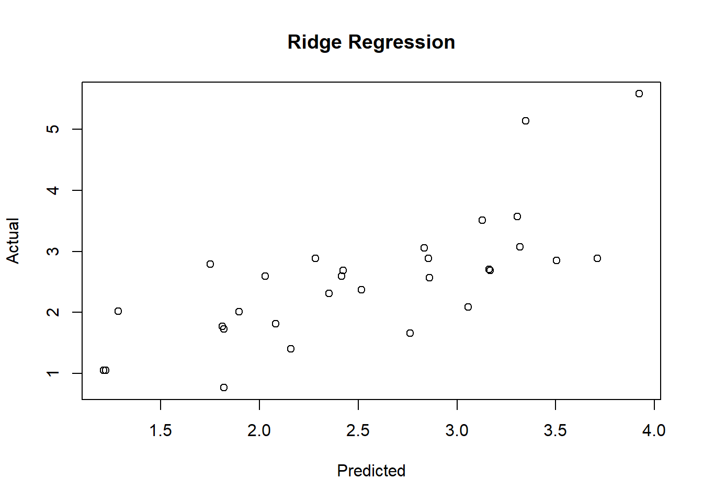
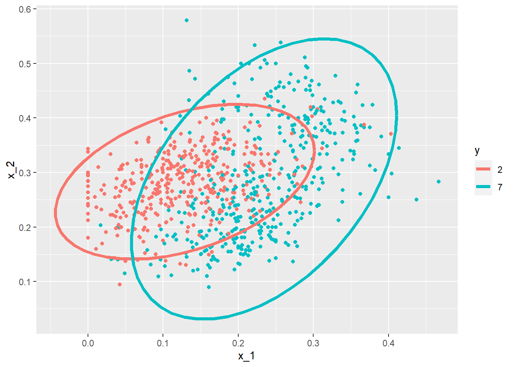
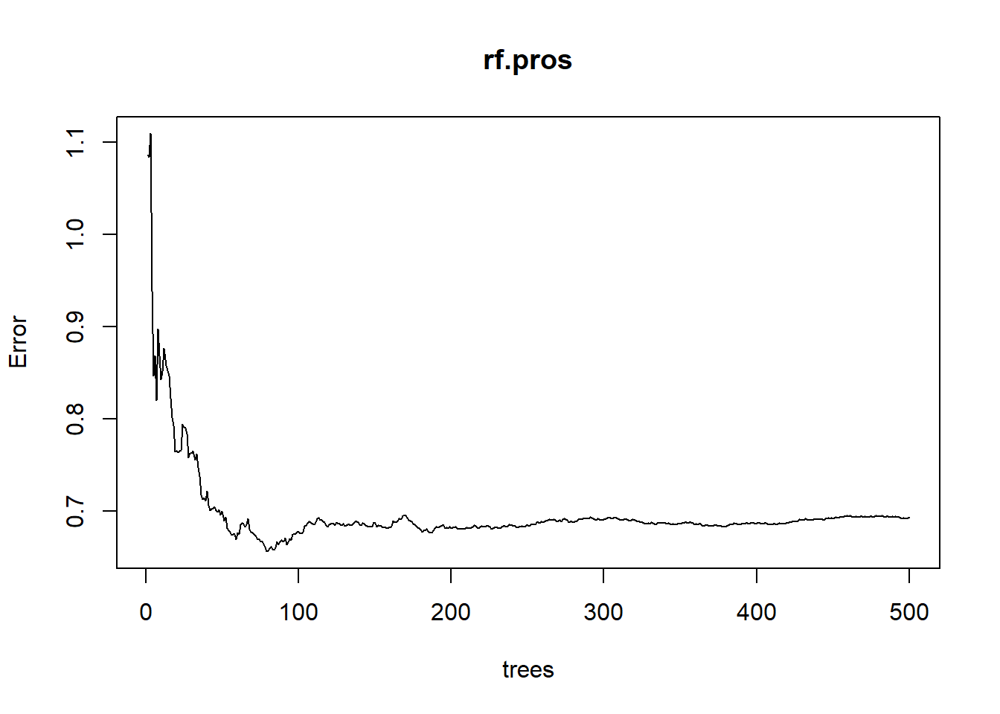

Chapter 1 Regularization Penalized Regression
1.1 Introduction
1.1.1 Motivation
- 当今很多数据集具有数量庞大的特征，即 使与观测值的数量相比也毫不逊色，这正如人们所称——高维性
- 随着我们要处理的数据规模不断增大，最优子集和逐步特征选择这样的技术会造成难以承受的时间成本——即使使用高速计算机。在很多情况下，要得到一个最优子集的解需要花费数小时。
- 在过去的二十多年中，人们已经开发和提炼了更新的技术，它们提供的预测能力和解释性已经远远超过了我们在前面章节中讨论过的线性模型.
正则化会对系数进行限制，甚至 将其缩减到0
- 岭回归
- 最小化绝对收缩
- 选择算子
- 弹性网络
Regularization for linear regression \[Y ≈ β0 + β1X1 + β2X2 + …+ βpXp\] 拟合过程涉及损失函数，称为残差平方和或RSS。 \[{\displaystyle \operatorname {RSS} =\sum _{i=1}^{n}(y_{i}-f(x_{i}))^{2}}\] \[{\displaystyle \operatorname {RSS} =\sum _{i=1}^{n}(\varepsilon _{i})^{2}=\sum _{i=1}^{n}(y_{i}-(\alpha +\beta x_{i}))^{2}}\]
通过正则化，我们会在RSS的最小化过程中加入一个新项，称之为收缩惩罚 \[y = β0 + β1x1 + β2x2 + ··· βkxk + λ(slope) ²\] λ被称为调优参数。如果λ = 0，模型就等价于OLS，因为规范化项目都被抵消了。
Strengthness
- 正则化方法在计算上 非常有效。如果使用最优子集法，我们需要在一个大数据集上测试\(2^p\)个模型，如果使用正则化方法，对于每个λ值，我们只需拟合一个模型，因此效率会有极大提升
- 偏差-方差权衡问题。在线性模型中，响应变量和预测变量之间的关系接近于线性，最小二乘估计接近于无偏，但可能有很高的方差。这意味着，训练集中的微小变动会导致最小二乘系数估计结果的巨大变动(James，2013)。正则化通过恰当地选择λ和规范化， 可以使偏差方差权衡达到最优，从而提高模型拟合的效果
- 系数的正则化还可以用来解 决多重共线性的问题。
Sources of Multicollinearity
- 数据收集。在这种情况下，数据是从自变量的狭窄子空间中收集的。多重共线性是通过抽样方法创建的，它在总体中不存在。在扩展范围内获得更多数据将解决此多重共线性问题。极端的例子是当您尝试将一条线拟合到单个点时。
- 过度定义的模型。在这里，变量多于观察值。应该避免这种情况。
- 模型选择或规格。多重共线性的来源来自使用独立变量，这些变量是原始变量集的幂或相互作用。应该注意的是，如果自变量的采样子空间很窄，那么这些变量的任何组合都将进一步加剧多重共线性问题。
- 离群值。 X空间中的极值或离群值会导致多重共线性以及隐藏多重共线性。我们称此为异常值引起的多重共线性。在应用岭回归之前，应通过除去异常值来进行纠正。
1.1.2 Data preparation
- lcavol:肿瘤体积的对数值
- lweight:前列腺重量的对数值
- age:患者年龄(以年计)
- lbph:良性前列腺增生(BPH)量的对数值，非癌症性质的前列腺增生。
- svi:贮精囊侵入，一个指标变量，表示癌细胞是否已经透过前列腺壁侵入贮精囊(1=是，0=否)。
- lcp:包膜穿透度的对数值，表示癌细胞扩散到前列腺包膜之外的程度。
- gleason:患者的Gleason评分;由病理学家进行活体检查后给出(2~10)，表示癌细胞的变异程度——评分越高，程度越危险。
- pgg45:Gleason评分为4或5所占的百分比(高等级癌症)。
- lpsa:PSA值的对数值，响应变量。
- train:一个逻辑向量(TRUE或FALSE，用来区分训练数据和测试数据)
library(car) # package to calculate Variance Inflation Factor
library(corrplot) # correlation plots
library(leaps) # best subsets regression
library(glmnet) # allows ridge regression, LASSO and elastic net
library(caret) # this will help identify the appropriate parameters
prostate <- read.delim("./01_Datasets/prostate.txt", header=T)
## 统计图或表格来理解数据
## 可以看出，结果变 量lpsa和预测变量lcavol之间确实存在明显的线性关系
plot(prostate)

##
## 6 7 8 9
## 35 56 1 5## 解决方法
# 完全删除这个特征;
# 仅删除值为8.0和9.0的那些评分;
# 对特征重新编码，建立一个指标变量。
# 建立一个横轴为Gleason Score，纵轴为Log of PSA的箱线图，会对我们的选择有所帮助
# 最好的选择是，将这个特征转换为一个指标变量，0表示评分为6，1表示评分为7或更高。删除特征可能会损失模型的预测能力。缺失值也可能会在我们将要使用的 glmnet包中引起问题。
boxplot(prostate$lpsa ~ prostate$gleason, xlab = "Gleason Score",
ylab = "Log of PSA")
## 对指标变量的编码使用ifelse()命令
prostate$gleason <- ifelse(prostate$gleason == 6, 0, 1)
table(prostate$gleason)##
## 0 1
## 35 62## 相关性统计图，表示特征之间是否存在相关性或依赖
## 发现问题：PSA和肿瘤体积的对数(lcavol)高度相关 0.73, 多重共线: 肿瘤体积还与包膜穿透相关，而包膜穿透还与贮精囊侵入相关
p.cor = cor(prostate[,-1])
corrplot.mixed(p.cor)
## 开始机器学习之前，必须先建立训练数据集和测试数据集
## 观测值中已经有一个特征指 明这个观测值是否属于训练集，我们就可以使用subset()命令将train值为TRUE的观测值分到 训练集中，将train值为FALSE的观测值分到测试集
train <- subset(prostate, train == TRUE)[, 2:10]
str(train)## 'data.frame': 67 obs. of 9 variables:
## $ lcavol : num -0.58 -0.994 -0.511 -1.204 0.751 ...
## $ lweight: num 2.77 3.32 2.69 3.28 3.43 ...
## $ age : int 50 58 74 58 62 50 58 65 63 63 ...
## $ lbph : num -1.39 -1.39 -1.39 -1.39 -1.39 ...
## $ svi : int 0 0 0 0 0 0 0 0 0 0 ...
## $ lcp : num -1.39 -1.39 -1.39 -1.39 -1.39 ...
## $ gleason: num 0 0 1 0 0 0 0 0 0 1 ...
## $ pgg45 : int 0 0 20 0 0 0 0 0 0 30 ...
## $ lpsa : num -0.431 -0.163 -0.163 -0.163 0.372 ...## 'data.frame': 30 obs. of 9 variables:
## $ lcavol : num 0.737 -0.777 0.223 1.206 2.059 ...
## $ lweight: num 3.47 3.54 3.24 3.44 3.5 ...
## $ age : int 64 47 63 57 60 69 68 67 65 54 ...
## $ lbph : num 0.615 -1.386 -1.386 -1.386 1.475 ...
## $ svi : int 0 0 0 0 0 0 0 0 0 0 ...
## $ lcp : num -1.386 -1.386 -1.386 -0.431 1.348 ...
## $ gleason: num 0 0 0 1 1 0 0 1 0 0 ...
## $ pgg45 : int 0 0 0 5 20 0 0 20 0 0 ...
## $ lpsa : num 0.765 1.047 1.047 1.399 1.658 ...1.1.3 Best subset regression
## 通过regsubsets()命令建立一个最小子集对象
subfit <- regsubsets(lpsa ~ ., data = train)
b.sum <- summary(subfit)
## 使用贝叶斯信息准则，三特征模型具有最小的BIC值
which.min(b.sum$bic)## [1] 3## 通过一个统计图查看模型性能和子集组合之间的关系
plot(b.sum$bic, type = "l", xlab = "# of Features", ylab = "BIC",
main = "BIC score by Feature Inclusion")
## 对实际模型做出统计图，进行更详细的检查，上图告诉我们具有最小BIC值的模型中的3个特征是:lcavol、lweight和gleason
plot(subfit, scale = "bic", main = "Best Subset Features")
## 用以上3个变量建立一个线性模型
ols <- lm(lpsa ~ lcavol + lweight + gleason, data = train)
## 线性拟合表现得很好，也不存在异方差性
plot(ols$fitted.values, train$lpsa, xlab = "Predicted", ylab = "Actual",
main = "Predicted vs Actual")
## 模型在测试集上的表现
pred.subfit = predict(ols, newdata=test)
plot(pred.subfit, test$lpsa , xlab = "Predicted",
ylab = "Actual", main = "Predicted vs Actual")
## [1] 0.50841261.2 Ridge Regression
岭回归(Ridge regression, Tikhonov regularization) 是一种专用于共线性数据分析的有偏估计回归方法，实质上是一种改良的最小二乘估计法，通过放弃最小二乘法的无偏性，以损失部分信息、降低精度为代价获得回归系数更为符合实际、更可靠的回归方法，对病态数据的拟合要强于最小二乘法。
在岭回归中，规范化项是所有 系数的平方和，称为L2-norm(L2范数)。在我们的模型中就是试图最小化RSS + λ(sumβj2)。 当λ增加时，系数会缩小，趋向于0但永远不会为0。 岭回归的优点是可以提高预测准确度，但因为它不能使任何一个特征的系数为0，所以在模型解释性上会有些问题
Hoerl and Kennard (1970) proposed that potential instability in the LS estimator \[ \hat{\beta}=\left(X^{\prime} X\right)^{-1} X^{\prime} Y, \] could be improved by adding a small constant value \(\lambda\) to the diagonal entries of the matrix \(X^{\prime} X\) before taking its inverse. The result is the ridge regression estimator \[ \hat{\beta}_{\text {ridge }}=\left(X^{\prime} X+\lambda I_{p}\right)^{-1} X^{\prime} Y \] Ridge regression places a particular form of constraint on the parameters \(\left(\beta^{\prime} \mathrm{s}\right): \hat{\beta}_{\text {ridge }}\) is chosen to minimize the penalized sum of squares: \[ \sum_{i=1}^{n}\left(y_{i}-\sum_{j=1}^{p} x_{i j} \beta_{j}\right)^{2}+\lambda \sum_{j=1}^{p} \beta_{j}^{2} \] which is equivalent to minimization of \(\sum_{i=1}^{n}\left(y_{i}-\sum_{j=1}^{p} x_{i j} \beta_{j}\right)^{2}\) subject to, for some \(c>0, \sum_{j=1}^{p} \beta_{j}^{2}<c\), i.e. constraining the sum of the squared coefficients. Therefore, ridge regression puts further constraints on the parameters, \(\beta_{j}\) ’s, in the linear model. In this case, what we are doing is that instead of just minimizing the residual sum values, the optimization function is penalized. We would prefer to take smaller \(\beta_{j}\) ’s, or \(\beta_{j}\) ’s that are close to zero to drive the penalty term small.
1.2.1 Modeling
岭回归的命令形式为glmnet(x=输入矩阵, y=响应变量, family= 分布函数, alpha=0)。 * alpha为0时，表示进行岭回归; * alpha为1时，表示进行LASSO
glmnet包会在计算λ值之前首先对输入进行标准化， 然后计算非标准化系数。 需要指定响应变量的分布为gaussian，因为它是连续的;还要指定 alpha = 0，表示进行岭回归。
x <- as.matrix(train[, 1:8])
y <- train[, 9]
ridge <- glmnet(x, y, family = "gaussian", alpha = 0)
## print()命令，它会展示非0 系数的数量，解释偏差百分比以及相应的λ值。程序包中算法默认的计算次数是100，但如果偏差 百分比在两个λ值之间的提高不是很显著的话，算法会在100次计算之前停止。也就是说，算法收 敛于最优解
## 第100行为例。可以看出非0系数，即模型中包含的特征的数量为8。在岭回归中，这个数是不变的。还可以看出解释偏差百分比为0.6971，以及这一行的调优系数λ的值为0.08789。
print(ridge)##
## Call: glmnet(x = x, y = y, family = "gaussian", alpha = 0)
##
## Df %Dev Lambda
## 1 8 0.00 878.90
## 2 8 0.56 800.80
## 3 8 0.61 729.70
## 4 8 0.67 664.80
## 5 8 0.74 605.80
## 6 8 0.81 552.00
## 7 8 0.89 502.90
## 8 8 0.97 458.20
## 9 8 1.07 417.50
## 10 8 1.17 380.40
## 11 8 1.28 346.60
## 12 8 1.40 315.90
## 13 8 1.54 287.80
## 14 8 1.68 262.20
## 15 8 1.84 238.90
## 16 8 2.02 217.70
## 17 8 2.21 198.40
## 18 8 2.42 180.70
## 19 8 2.64 164.70
## 20 8 2.89 150.10
## 21 8 3.16 136.70
## 22 8 3.46 124.60
## 23 8 3.78 113.50
## 24 8 4.13 103.40
## 25 8 4.50 94.24
## 26 8 4.91 85.87
## 27 8 5.36 78.24
## 28 8 5.84 71.29
## 29 8 6.36 64.96
## 30 8 6.93 59.19
## 31 8 7.54 53.93
## 32 8 8.19 49.14
## 33 8 8.90 44.77
## 34 8 9.65 40.79
## 35 8 10.46 37.17
## 36 8 11.33 33.87
## 37 8 12.25 30.86
## 38 8 13.24 28.12
## 39 8 14.28 25.62
## 40 8 15.39 23.34
## 41 8 16.55 21.27
## 42 8 17.78 19.38
## 43 8 19.07 17.66
## 44 8 20.41 16.09
## 45 8 21.81 14.66
## 46 8 23.27 13.36
## 47 8 24.77 12.17
## 48 8 26.31 11.09
## 49 8 27.90 10.10
## 50 8 29.51 9.21
## 51 8 31.15 8.39
## 52 8 32.81 7.64
## 53 8 34.47 6.96
## 54 8 36.14 6.35
## 55 8 37.80 5.78
## 56 8 39.45 5.27
## 57 8 41.08 4.80
## 58 8 42.68 4.37
## 59 8 44.24 3.99
## 60 8 45.76 3.63
## 61 8 47.24 3.31
## 62 8 48.66 3.02
## 63 8 50.03 2.75
## 64 8 51.34 2.50
## 65 8 52.60 2.28
## 66 8 53.80 2.08
## 67 8 54.93 1.89
## 68 8 56.01 1.73
## 69 8 57.03 1.57
## 70 8 58.00 1.43
## 71 8 58.91 1.30
## 72 8 59.76 1.19
## 73 8 60.57 1.08
## 74 8 61.33 0.99
## 75 8 62.04 0.90
## 76 8 62.70 0.82
## 77 8 63.33 0.75
## 78 8 63.91 0.68
## 79 8 64.45 0.62
## 80 8 64.96 0.56
## 81 8 65.43 0.51
## 82 8 65.87 0.47
## 83 8 66.28 0.43
## 84 8 66.66 0.39
## 85 8 67.01 0.35
## 86 8 67.33 0.32
## 87 8 67.63 0.29
## 88 8 67.90 0.27
## 89 8 68.15 0.24
## 90 8 68.38 0.22
## 91 8 68.59 0.20
## 92 8 68.77 0.18
## 93 8 68.94 0.17
## 94 8 69.09 0.15
## 95 8 69.23 0.14
## 96 8 69.35 0.13
## 97 8 69.46 0.12
## 98 8 69.55 0.11
## 99 8 69.64 0.10
## 100 8 69.71 0.09

## 看系数值如何随解释偏差百分比变化，将lamda换成dev
## 当λ减小时，系数会增大，解释偏差百分比也 会增大。如果将λ值设为0，就会忽略收缩惩罚，模型将等价于OLS
plot(ridge, xvar = "dev", label = TRUE)
## 在测试集上证明
newx <- as.matrix(test[, 1:8])
ridge.y = predict(ridge, newx = newx, type = "response", s=0.1)
## 画出表示预测值和实际值关系的统计图
plot(ridge.y, test$lpsa, xlab = "Predicted",
ylab = "Actual", main = "Ridge Regression")
## [1] 0.47835591.3 Lasso Regression
区别于岭回归中的L2-norm，LASSO使用L1-norm，即所有特征权重的绝对值之和， 也就是要最小化RSS + λ(sum|βj|)。这个收缩惩罚项确实可以使特征权重收缩到0. 相对于岭回归，这是 L2-norm 一个明显的优势，因为可以极大地提高模型的解释性。 但是，存在高共线性或高度两两相关 的情况下，LASSO可能会将某个预测特征强制删除，这会损失模型的预测能力. 如果 特征A和B都应该存在于模型之中，那么LASSO可能会将其中一个的系数缩减到0。
如果较少数目的预测变量有实际系数，其余预测变量的系数要么非常小，要么为0， 那么在这样的情况下，LASSO性能更好。 当响应变量是很多预测变量的函数，而且预测变量的系数大小都差不多时，岭回归表现得更好 两全其美的机会: 弹性网络既能做到岭回归不能做的特征提取，也能实现LASSO不能做的 特征分组。
A ridge solution can be hard to interpret because it is not sparse (no \(\beta\) ’s are set exactly to 0 ).
- Ridge subject to: \(\sum_{j=1}^{p}\left(\beta_{j}\right)^{2}<c\).
- Lasso subject to: \(\sum_{j=1}^{p}\left|\beta_{j}\right|<c\).
This is a subtle, but important change. Some of the coefficients may be shrunk exactly to zero. The least absolute shrinkage and selection operator, or lasso, as described in Tibshirani (1996) is a technique that has received a great deal of interest. As with ridge regression we assume the covariates are standardized. Lasso estimates of the coefficients (Tibshirani, 1996) achieve min \((Y-X \beta)^{\prime}(Y-X \beta)+\lambda \sum_{j=1}^{p}\left|\beta_{j}\right|\), so that the L2 penalty of ridge regression \(\sum_{j=1}^{p} \beta_{j}^{2}\) is replaced by an L1 penalty, \(\sum_{j=1}^{p}\left|\beta_{j}\right|\). 4 ### Modelling
##
## Call: glmnet(x = x, y = y, family = "gaussian", alpha = 1)
##
## Df %Dev Lambda
## 1 0 0.00 0.87890
## 2 1 9.13 0.80080
## 3 1 16.70 0.72970
## 4 1 22.99 0.66480
## 5 1 28.22 0.60580
## 6 1 32.55 0.55200
## 7 1 36.15 0.50290
## 8 1 39.14 0.45820
## 9 2 42.81 0.41750
## 10 2 45.98 0.38040
## 11 3 48.77 0.34660
## 12 3 51.31 0.31590
## 13 4 53.49 0.28780
## 14 4 55.57 0.26220
## 15 4 57.30 0.23890
## 16 4 58.74 0.21770
## 17 4 59.93 0.19840
## 18 5 61.17 0.18070
## 19 5 62.20 0.16470
## 20 5 63.05 0.15010
## 21 5 63.76 0.13670
## 22 5 64.35 0.12460
## 23 5 64.84 0.11350
## 24 5 65.24 0.10340
## 25 6 65.58 0.09424
## 26 6 65.87 0.08587
## 27 6 66.11 0.07824
## 28 6 66.31 0.07129
## 29 7 66.63 0.06496
## 30 7 66.96 0.05919
## 31 7 67.24 0.05393
## 32 7 67.46 0.04914
## 33 7 67.65 0.04477
## 34 8 67.97 0.04079
## 35 8 68.34 0.03717
## 36 8 68.66 0.03387
## 37 8 68.92 0.03086
## 38 8 69.13 0.02812
## 39 8 69.31 0.02562
## 40 8 69.46 0.02334
## 41 8 69.58 0.02127
## 42 8 69.68 0.01938
## 43 8 69.77 0.01766
## 44 8 69.84 0.01609
## 45 8 69.90 0.01466
## 46 8 69.95 0.01336
## 47 8 69.99 0.01217
## 48 8 70.02 0.01109
## 49 8 70.05 0.01010
## 50 8 70.07 0.00921
## 51 8 70.09 0.00839
## 52 8 70.11 0.00764
## 53 8 70.12 0.00696
## 54 8 70.13 0.00635
## 55 8 70.14 0.00578
## 56 8 70.15 0.00527
## 57 8 70.15 0.00480
## 58 8 70.16 0.00437
## 59 8 70.16 0.00399
## 60 8 70.17 0.00363
## 61 8 70.17 0.00331
## 62 8 70.17 0.00301
## 63 8 70.17 0.00275
## 64 8 70.18 0.00250
## 65 8 70.18 0.00228
## 66 8 70.18 0.00208
## 67 8 70.18 0.00189
## 68 8 70.18 0.00172
## 69 8 70.18 0.00157## 模型构建过程在69步之后停止了，因为解释偏差不再随着λ值的增加而减小。还要 注意，Df列现在也随着λ变化。初看上去，当λ值为0.001572时，所有8个特征都应该包括在模型 中。然而，出于测试的目的，我们先用更少特征的模型进行测试，比如7特征模型。从下面的结 果行中可以看到，λ值大约为0.045时，模型从7个特征变为8个特征。因此，使用测试集评价模型 时要使用这个λ值
plot(lasso, xvar = "lambda", label = TRUE)
## 9 x 1 sparse Matrix of class "dgCMatrix"
## s1
## (Intercept) -0.1305900670
## lcavol 0.4479592050
## lweight 0.5910476764
## age -0.0073162861
## lbph 0.0974103575
## svi 0.4746790830
## lcp .
## gleason 0.2968768129
## pgg45 0.0009788059## LASSO算法在λ值为0.045时，将lcp的系数归零
## LASSO模型在测试集上的表现
lasso.y <- predict(lasso, newx = newx,
type = "response", s = 0.045)
plot(lasso.y, test$lpsa, xlab = "Predicted", ylab = "Actual",
main = "LASSO")
## [1] 0.44372091.3.1 glmnet cross validation
glmnet包在使用cv.glmnet()估计 λ值时，默认使用10折交叉验证。 在K折交叉验证中，数据被划分成k个相同的子集(折)，每次使 用k 1个子集拟合模型，然后使用剩下的那个子集做测试集，最后将k次拟合的结果综合起来(一 般取平均数)，确定最后的参数。

## Interpretation
## CV统计图和glmnet中其他统计图有很大区别，它表示λ的对数值和均方误差之间的关系，还 带有模型中特征的数量。图中两条垂直的虚线表示取得MSE最小值的logλ(左侧虚线)和距离最 小值一个标准误差的logλ。如果有过拟合问题，那么距离最小值一个标准误的位置是非常好的解决问题的起点。
## 得到这两个λ的具体值
lasso.cv$lambda.min # minimum## [1] 0.007644054## [1] 0.3158532## 9 x 1 sparse Matrix of class "dgCMatrix"
## s1
## (Intercept) 1.07462462
## lcavol 0.41767273
## lweight 0.22464383
## age .
## lbph .
## svi 0.06489231
## lcp .
## gleason .
## pgg45 .lasso.y.cv = predict(lasso.cv, newx=newx, type = "response",
s = "lambda.1se")
lasso.cv.resid = lasso.y.cv - test$lpsa
mean(lasso.cv.resid^2)## [1] 0.55082641.4 ElasticNet
弹性网络(ElasticNet)
- 既能做到岭回归不能做的特征提取，也能实现LASSO不能做的 特征分组。
- LASSO倾向于在一组相关的特征中选择一个，忽略其他。弹性网络包含了 一个混合参数α，它和λ同时起作用。 α是一个0和1之间的数，λ和前面一样，用来调节惩罚项的大小。 当α等于0时，弹性网络等价于岭回归;当α等于1时，弹性网络等价于LASSO。
- 实质上，通过对β系数的二次项引入一个第二调优参数，将L1惩罚项和L2惩罚项混合在一起。 通过最小化(RSS + λ[(1-α)(sum|βj|2)/2 + α(sum|βj|)]/N)完成目标。
1.4.1 Modelling
弹性网络参数α。回忆一下，α = 0表示岭回归惩罚，α = 1表示LASSO惩罚， 弹性网络参数为0≤α≤1。同时解出两个不同的参数会非常麻烦，求助于R中的老朋友——caret包。
caret包旨在解决分类问题和训练回归模型，它配有一个很棒的网站，帮助人们掌握其所有功能:http://topepo.github.io/caret/index.html
- 使用R基础包中的expand.grid()函数，建立一个向量存储我们要研究的α和λ的所有 组合。
- 使用caret包中的trainControl()函数确定重取样方法，像第2章一样，使用LOOCV。
- P在caret包的train()函数中使用glmnet()训练模型来选择α和λ。
规则试验: * α从0到1，每次增加0.2;请记住，α被绑定在0和1之间。 * λ从0到0.20，每次增加0.02;0.2的λ值是岭回归λ值(λ = 0.1)和LASSOλ值(λ = 0.045)之间的一个中间值。 * expand.grid()函数建立这个向量并生成一系列数值，caret包会自动使用这些数值
## .lambda
## .alpha 0 0.02 0.04 0.06 0.08 0.1 0.12 0.14 0.16 0.18 0.2
## 0 1 1 1 1 1 1 1 1 1 1 1
## 0.2 1 1 1 1 1 1 1 1 1 1 1
## 0.4 1 1 1 1 1 1 1 1 1 1 1
## 0.6 1 1 1 1 1 1 1 1 1 1 1
## 0.8 1 1 1 1 1 1 1 1 1 1 1
## 1 1 1 1 1 1 1 1 1 1 1 1## .alpha .lambda
## 1 0.0 0
## 2 0.2 0
## 3 0.4 0
## 4 0.6 0
## 5 0.8 0
## 6 1.0 0## 对于定量型响应变量，使用算法的默认选择均方根误差即可完美实现
control <- trainControl(method = "LOOCV") # selectionFunction="best"
set.seed(701) # our random seed
enet.train = train(lpsa ~ ., data = train,
method = "glmnet",
trControl = control,
tuneGrid = grid)
enet.train## glmnet
##
## 67 samples
## 8 predictor
##
## No pre-processing
## Resampling: Leave-One-Out Cross-Validation
## Summary of sample sizes: 66, 66, 66, 66, 66, 66, ...
## Resampling results across tuning parameters:
##
## alpha lambda RMSE Rsquared MAE
## 0.0 0.00 0.7498311 0.6091434 0.5684548
## 0.0 0.02 0.7498311 0.6091434 0.5684548
## 0.0 0.04 0.7498311 0.6091434 0.5684548
## 0.0 0.06 0.7498311 0.6091434 0.5684548
## 0.0 0.08 0.7498311 0.6091434 0.5684548
## 0.0 0.10 0.7508038 0.6079576 0.5691343
## 0.0 0.12 0.7512303 0.6073484 0.5692774
## 0.0 0.14 0.7518536 0.6066518 0.5694451
## 0.0 0.16 0.7526409 0.6058786 0.5696155
## 0.0 0.18 0.7535502 0.6050559 0.5699154
## 0.0 0.20 0.7545583 0.6041945 0.5709377
## 0.2 0.00 0.7550170 0.6073913 0.5746434
## 0.2 0.02 0.7542648 0.6065770 0.5713633
## 0.2 0.04 0.7550427 0.6045111 0.5738111
## 0.2 0.06 0.7571893 0.6015388 0.5764117
## 0.2 0.08 0.7603394 0.5978544 0.5793641
## 0.2 0.10 0.7642219 0.5936131 0.5846567
## 0.2 0.12 0.7684937 0.5890900 0.5898445
## 0.2 0.14 0.7713716 0.5861699 0.5939008
## 0.2 0.16 0.7714681 0.5864527 0.5939535
## 0.2 0.18 0.7726979 0.5856865 0.5948039
## 0.2 0.20 0.7744041 0.5845281 0.5959671
## 0.4 0.00 0.7551309 0.6072931 0.5746628
## 0.4 0.02 0.7559055 0.6044693 0.5737468
## 0.4 0.04 0.7599608 0.5989266 0.5794120
## 0.4 0.06 0.7667450 0.5911506 0.5875213
## 0.4 0.08 0.7746900 0.5824231 0.5979116
## 0.4 0.10 0.7760605 0.5809784 0.6001763
## 0.4 0.12 0.7784160 0.5788024 0.6024102
## 0.4 0.14 0.7792216 0.5786250 0.6035698
## 0.4 0.16 0.7784433 0.5806388 0.6024696
## 0.4 0.18 0.7779134 0.5828322 0.6014095
## 0.4 0.20 0.7797721 0.5826306 0.6020934
## 0.6 0.00 0.7553016 0.6071317 0.5748038
## 0.6 0.02 0.7579330 0.6020021 0.5766881
## 0.6 0.04 0.7665234 0.5917067 0.5863966
## 0.6 0.06 0.7778600 0.5790948 0.6021629
## 0.6 0.08 0.7801170 0.5765439 0.6049216
## 0.6 0.10 0.7819242 0.5750003 0.6073379
## 0.6 0.12 0.7800315 0.5782365 0.6053700
## 0.6 0.14 0.7813077 0.5785548 0.6059119
## 0.6 0.16 0.7846753 0.5770307 0.6075899
## 0.6 0.18 0.7886388 0.5753101 0.6104210
## 0.6 0.20 0.7931549 0.5734018 0.6140249
## 0.8 0.00 0.7553734 0.6070686 0.5748255
## 0.8 0.02 0.7603679 0.5991567 0.5797001
## 0.8 0.04 0.7747753 0.5827275 0.5975303
## 0.8 0.06 0.7812784 0.5752601 0.6065340
## 0.8 0.08 0.7832103 0.5734172 0.6092662
## 0.8 0.10 0.7811248 0.5769787 0.6071341
## 0.8 0.12 0.7847355 0.5750115 0.6093756
## 0.8 0.14 0.7894184 0.5725728 0.6122536
## 0.8 0.16 0.7951091 0.5696205 0.6158407
## 0.8 0.18 0.8018475 0.5659672 0.6205741
## 0.8 0.20 0.8090352 0.5622252 0.6256726
## 1.0 0.00 0.7554439 0.6070354 0.5749409
## 1.0 0.02 0.7632577 0.5958706 0.5827830
## 1.0 0.04 0.7813519 0.5754986 0.6065914
## 1.0 0.06 0.7843882 0.5718847 0.6103528
## 1.0 0.08 0.7819175 0.5755415 0.6082954
## 1.0 0.10 0.7860004 0.5731009 0.6107923
## 1.0 0.12 0.7921572 0.5692525 0.6146159
## 1.0 0.14 0.7999326 0.5642789 0.6198758
## 1.0 0.16 0.8089248 0.5583637 0.6265797
## 1.0 0.18 0.8185327 0.5521348 0.6343174
## 1.0 0.20 0.8259445 0.5494268 0.6411104
##
## RMSE was used to select the optimal model using the smallest value.
## The final values used for the model were alpha = 0 and lambda = 0.08.## 选择最优模型的原则是RMSE值最小，模型最后选定的最优参数组合是α = 0，λ = 0.08。
## 实验设计得到的最优调优参数是α = 0和λ = 0.08，相当于glmnet中s = 0.08的岭回归
## 在测试集上验证模型
# enet <- glmnet(x, y,family = "gaussian",
# alpha = 0,
# lambda = .08)
# enet.coef <- coef(enet, s = .08, exact = TRUE)
# enet.coef
# enet.y <- predict(enet, newx = newx, type = "response", s= .08)
# plot(enet.y, test$lpsa, xlab = "Predicted",
# ylab = "Actual", main = "Elastic Net")
# enet.resid <- enet.y - test$lpsa
# mean(enet.resid^2)1.4.2 Classification
## 用于逻辑斯蒂回归
## 加载准备乳腺癌数据
library(MASS)
biopsy$ID = NULL
names(biopsy) = c("thick", "u.size", "u.shape", "adhsn",
"s.size", "nucl", "chrom", "n.nuc", "mit", "class")
biopsy.v2 <- na.omit(biopsy)
set.seed(123) #random number generator
ind <- sample(2, nrow(biopsy.v2), replace = TRUE, prob = c(0.7, 0.3))
train <- biopsy.v2[ind==1, ] #the training data set
test <- biopsy.v2[ind==2, ] #the test data set
x <- as.matrix(train[, 1:9])
y <- train[, 10]
## 函数cv.glmnet中，将family的值设定为binomial，将measure的值设定为曲线下面积 (auc)，并使用5折交叉验证
set.seed(3)
fitCV <- cv.glmnet(x, y, family = "binomial",
type.measure = "auc",
nfolds = 5)
## 绘制fitCV，可以看出AUC和λ的关系
plot(fitCV)
## [1] 0.1710154## 10 x 1 sparse Matrix of class "dgCMatrix"
## s1
## (Intercept) -2.01180454
## thick 0.03320390
## u.size 0.10789382
## u.shape 0.08617195
## adhsn .
## s.size .
## nucl 0.15038212
## chrom .
## n.nuc 0.00483271
## mit .## 通过误差和auc，查看这个模型在测试集上的表现
library(InformationValue)
predCV <- predict(fitCV, newx = as.matrix(test[, 1:9]),
s = "lambda.1se",
type = "response")
actuals <- ifelse(test$class == "malignant", 1, 0)
misClassError(actuals, predCV)## [1] 0.0574